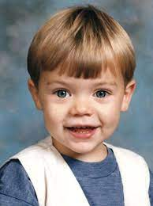
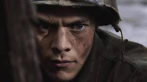

Harry Styles was born in Bromsgrove, Worcestershire, in the West Midlands region of England, on February 1, 1994. When he was seven years old, his parents, Des and Anne, split. He and his sister Gemma were raised by their mother in the Cheshire town of Holmes Chapel. His mother remarried to Robin Twist later in life. Styles went to Holmes Chapel Comprehensive School, where he established the band White Eskimo with three of his mates. Styles was the lead singer for White Eskimo, and the band was successful enough at their school to win a band competition. Styles worked at the W. Mandeville bakery in Holmes Chapel after school and on weekends.
Harry Styles as a baby.
Styles’ sexual relationships were constantly tracked by the press and fans as he ascended to stardom, earning him the nickname "the flirt" of One Direction. He began dating Caroline Flack, a television presenter, in 2011, when he was competing on The X Factor and she was hosting its spin-off show, The Xtra Factor. The age gap between them-Styles was 17 at the time, while Flack was 32-became a point of contention. Styles was later linked to photographer Sarah-Louise Colivet, models Emma Ostilly and Cara Delevingne, and singers Lily Halpern and Rita Ora in a love relationship. His most well-known relationship in 2012 was a two-month relationship with music artist Taylor Swift, which purportedly inspired two of Swift's songs. Styles later dated Camille Rowe, a French model.
Harry in public with short-term girlfriend, Taylor Swift.
Styles made a spectacular solo debut in 2017 with the epic single "Sign of the Times," which was followed by his self-titled album, which debuted at No. 1 as well. Fans had to wait another two years for his next song, "Lights Up," which was released in October 2019. Fine Line, his second solo album, featured his first No. 1 song, "Watermelon Sugar." He was also nominated for three Grammy Awards that year. Styles made his feature film debut as an Allied soldier named Alex in Christopher Nolan’s 2017 war blockbuster Dunkirk, after appearing in concert documentaries with One Direction.
Scene of Styles in Dunkirk.